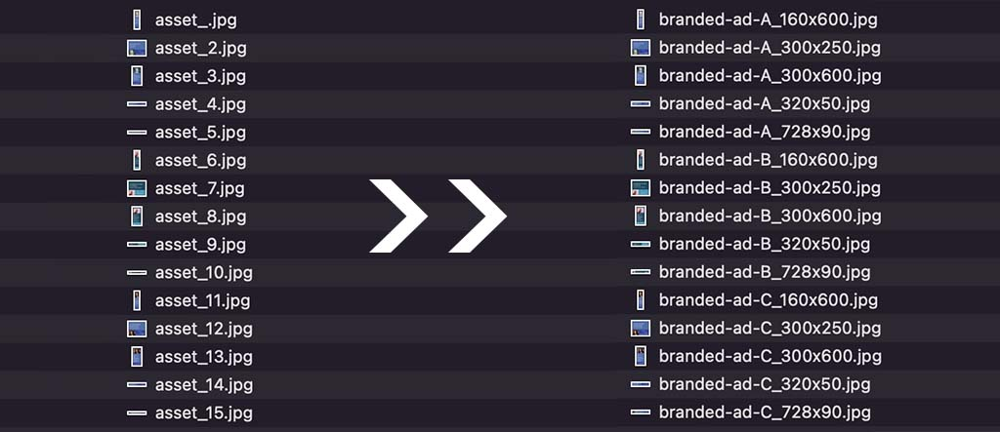

node rename tool C L I
This is a command-line tool, built in Node.js. It is designed to be used as part of a production workflow in combination with InDesign's Data Merge feature, or a similar system. The tool takes as inputs a folder of image assets and two CSV files containing parameters for renaming the image assets, and renames them to use a consistent schema. This tool helps with efficient templated production of visual asset groups such as banner ads and branded social posts.
List of technologies used in node-rename-tool-cli
- Node.js
- npm